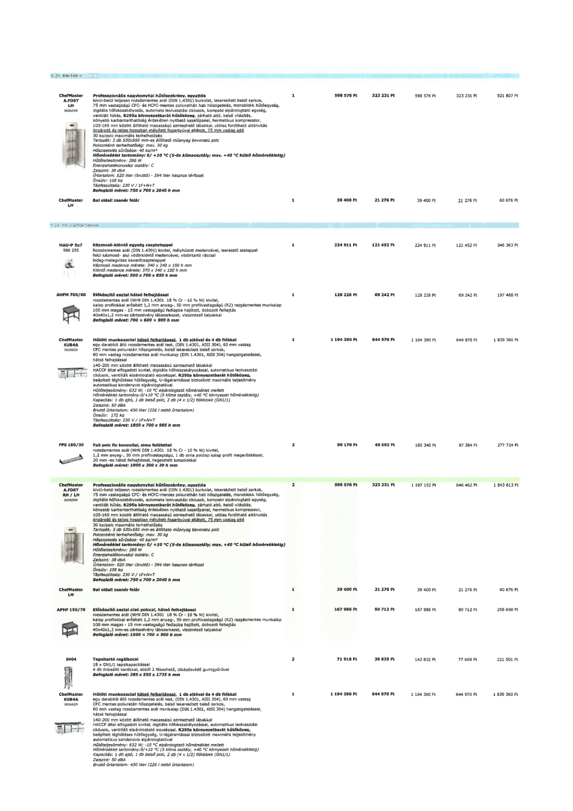

| Tétel | Menny. | Egys. | Anyag e.ár (net HUF) | Díj e.ár (net HUF) | Anyag összesen (net HUF) | Díj összesen (net HUF) | Anyag+Díj összesen (net HUF) |
|---|---|---|---|---|---|---|---|
| ChefMaster A.FD6T LH 5026590 Professzionális nagykonyhai hűtőszekrény, egyajtós | 1 | NaN | 598 576 | 323 231 | 598 576 | 323 231 | 921 807 |
| ChefMaster LH Bal oldali zsanér felár | 1 | NaN | 39 400 | 21 276 | 39 400 | 21 276 | 60 676 |
| HAU-P 5x7 566 255 Kézmosó-kiöntő egység csapteleppel | 1 | NaN | 224 911 | 121 452 | 224 911 | 121 452 | 346 363 |
| AHFM 700/60 Előkészítő asztal hátsó felhajtással | 1 | NaN | 128 226 | 69 242 | 128 226 | 69 242 | 197 468 |
| ChefMaster KUB4A 5026629 Hűtött munkaasztal hátsó felhajtással, 1 db ajtóval és 4 db fiókkal | 1 | NaN | 1 194 390 | 644 970 | 1 194 390 | 644 970 | 1 839 360 |
| FPS 180/30 Fali polc fix konzollal, sima felülettel | 2 | NaN | 90 170 | 48 692 | 180 340 | 97 384 | 277 724 |
| ChefMaster A.FD6T RH / LH 5026590 Professzionális nagykonyhai hűtőszekrény, egyajtós | 2 | NaN | 598 576 | 323 231 | 1 197 152 | 646 462 | 1 843 613 |
| ChefMaster LH Bal oldali zsanér felár | 1 | NaN | 39 400 | 21 276 | 39 400 | 21 276 | 60 676 |
| APHF 150/70 Előkészítő asztal alsó polccal, hátsó felhajtással | 1 | NaN | 167 986 | 90 712 | 167 986 | 90 712 | 258 698 |
| S404 Tepsitartó regálkocsi | 2 | NaN | 71 916 | 38 835 | 143 832 | 77 669 | 221 501 |
| ChefMaster KUB4A 5026629 Hűtött munkaasztal hátsó felhajtással, 1 db ajtóval és 4 db fiókkal | 1 | NaN | 1 194 390 | 644 970 | 1 194 390 | 644 970 | 1 839 360 |
